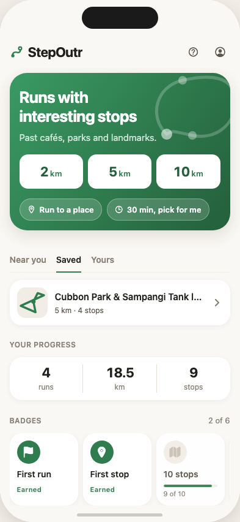
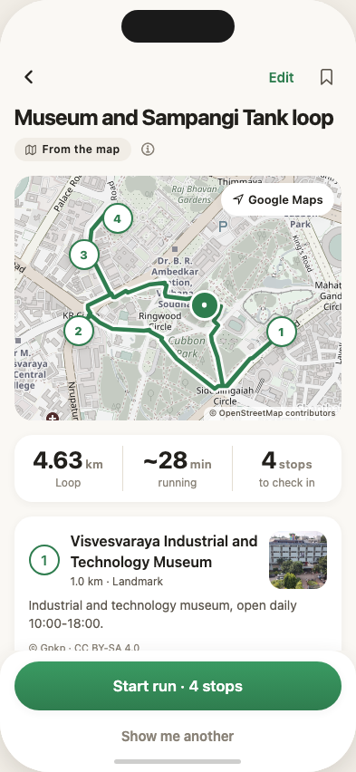

Maps optimise for arrival. StepOutr optimises for the route — a walk, run or ride built around real places nearby, with a handful of stops you reach by actually being there.
Opens an email to the person building it — no account, no spam.

How it works
Tap 2, 5 or 10 km. It routes you past places worth passing.
GPS confirms it when you arrive. Skipping one is fine — a change of plan, never a failure.
No account needed to start. Routes, runs and badges live on your device.
Every route says where it came from
Most apps show you a route and let you assume it's been checked. StepOutr labels every one with exactly how sure it is — right on the screen, every time.
Real OpenStreetMap places, picked fresh each time.
What you ran and kept, or imported from Strava — stays on your phone.
None are live yet — earned only once a person has actually run it.
What you can trust
A stop's line comes from what the map actually says about it, or it's left blank — no invented hours, no filler. The street path is a real routing engine, not a straight line between dots.

Testing now, Bengaluru first
Not on the Play Store yet — one open item left on the release checklist. Leave your email and you'll hear the moment it is.
Or write straight in: priyam.rajput98@gmail.com